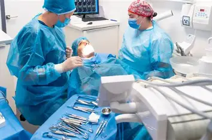
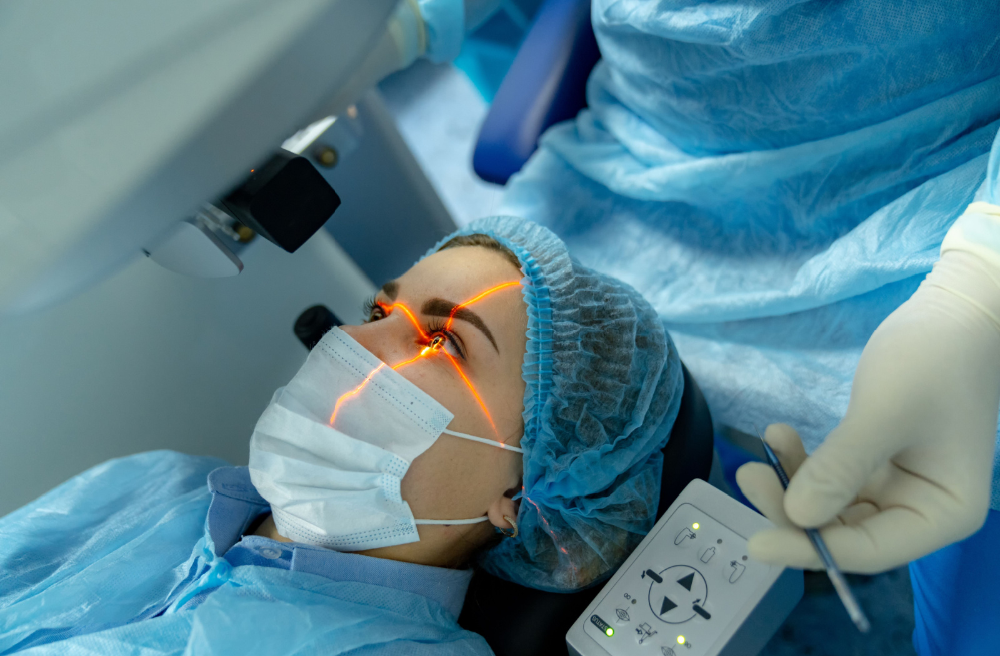
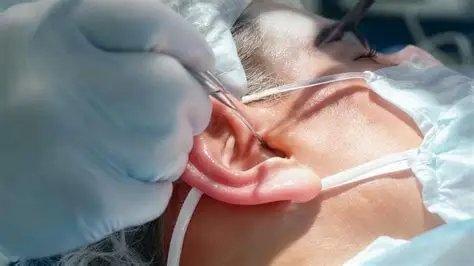

Our hospital provides complete dental care, including routine check‑ups, cavity treatment, and cosmetic dentistry. With modern equipment and skilled dentists, we ensure healthy smiles and long‑lasting oral health.
Our hospital offers expert eye care, including cataract surgery, LASIK, and glaucoma management. We combine advanced technology with specialist doctors to protect and improve your vision
Our hospital provides specialized ear care, including treatment for infections, hearing loss, and balance disorders. With advanced equipment and expert ENT specialists, we ensure safe and effective solutions for healthy hearing.

Our hospital offers complete dental services including root canal therapy, tooth extractions, fillings, and cosmetic procedures.
Dr R.K Mehta

Our hospital provides advanced eye care, including cataract surgery, LASIK, and glaucoma management. With modern technology and skilled specialists, we ensure safe treatment and long‑term vision health.
Dr Naresh Trehan

Our hospital provides expert ear care, including treatment for infections, hearing loss, and balance disorders.
Dr Rupesh Bhat
Need to talk with specialist?
Book Appointment